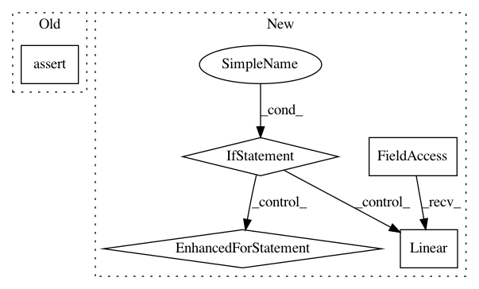

7ff7b4e5919de9fda319dd514003c5af1832c10d,policy.py,FCSoftmaxPolicy,__init__,#FCSoftmaxPolicy#Any#Any#Any#Any#,104
Before Change
self.n_hidden_channels = n_hidden_channels
layers = []
assert n_hidden_layers >= 1
layers.append(L.Linear(n_input_channels, n_hidden_channels))
for i in range(n_hidden_layers - 1):
layers.append(L.Linear(n_hidden_channels, n_hidden_channels))
layers.append(L.Linear(n_hidden_channels, n_actions))
After Change
self.n_hidden_channels = n_hidden_channels
layers = []
if n_hidden_layers > 0:
layers.append(L.Linear(n_input_channels, n_hidden_channels))
for i in range(n_hidden_layers - 1):
layers.append(L.Linear(n_hidden_channels, n_hidden_channels))
layers.append(L.Linear(n_hidden_channels, n_actions))
else:
layers.append(L.Linear(n_input_channels, n_actions))
super(FCSoftmaxPolicy, self).__init__(*layers)
def compute_logits(self, state):
h = state
In pattern: SUPERPATTERN
Frequency: 3
Non-data size: 5
Instances
Project Name: chainer/chainerrl
Commit Name: 7ff7b4e5919de9fda319dd514003c5af1832c10d
Time: 2016-04-30
Author: muupan@gmail.com
File Name: policy.py
Class Name: FCSoftmaxPolicy
Method Name: __init__
Project Name: chainer/chainerrl
Commit Name: 939512c36bf89a9ddb02b01818018e4fbfb9bef1
Time: 2017-02-22
Author: muupan@gmail.com
File Name: chainerrl/q_functions/state_action_q_functions.py
Class Name: FCSAQFunction
Method Name: __init__
Project Name: chainer/chainerrl
Commit Name: 06bade5c5fc40c0241ae5960b6a0dd1766e7732b
Time: 2017-02-28
Author: muupan@gmail.com
File Name: chainerrl/q_functions/state_action_q_functions.py
Class Name: FCSAQFunction
Method Name: __init__